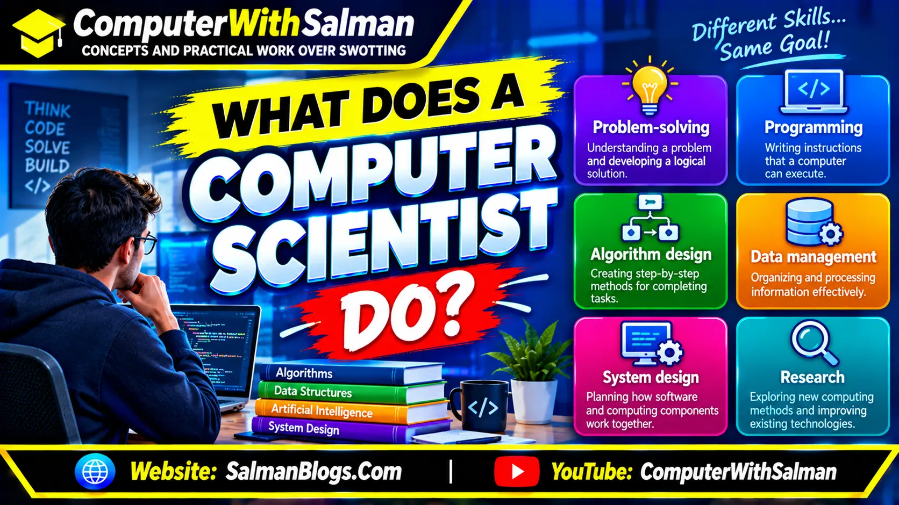
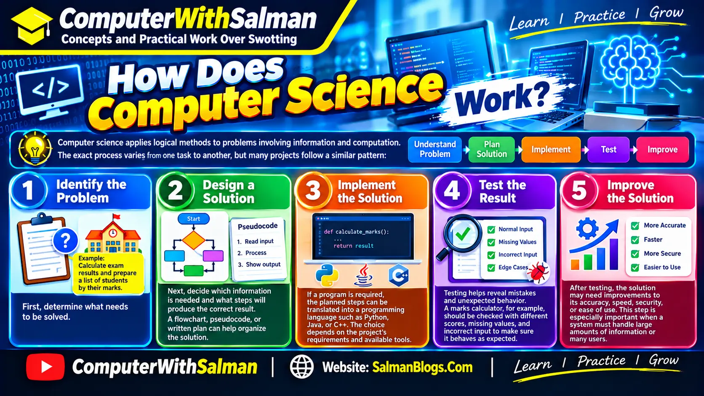
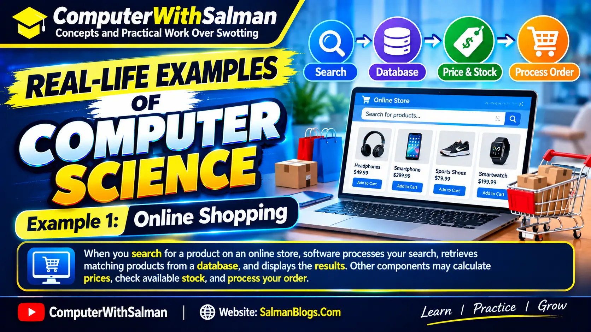
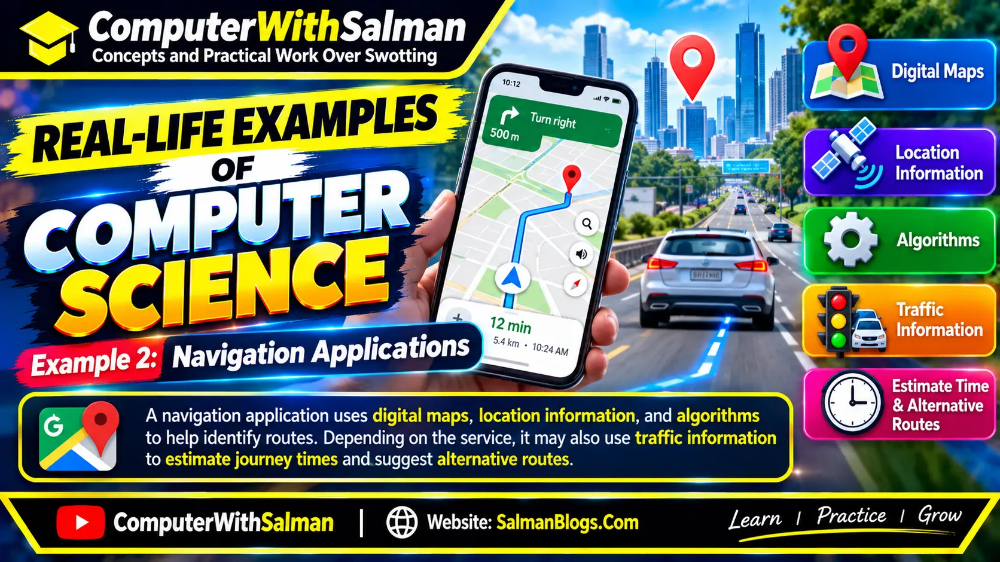
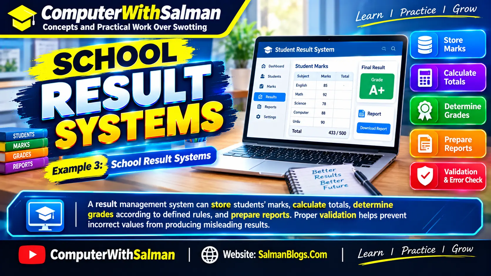
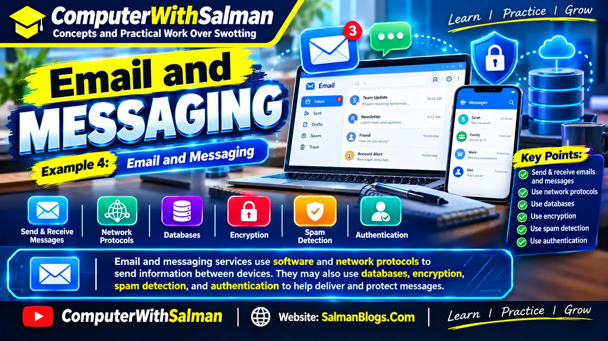
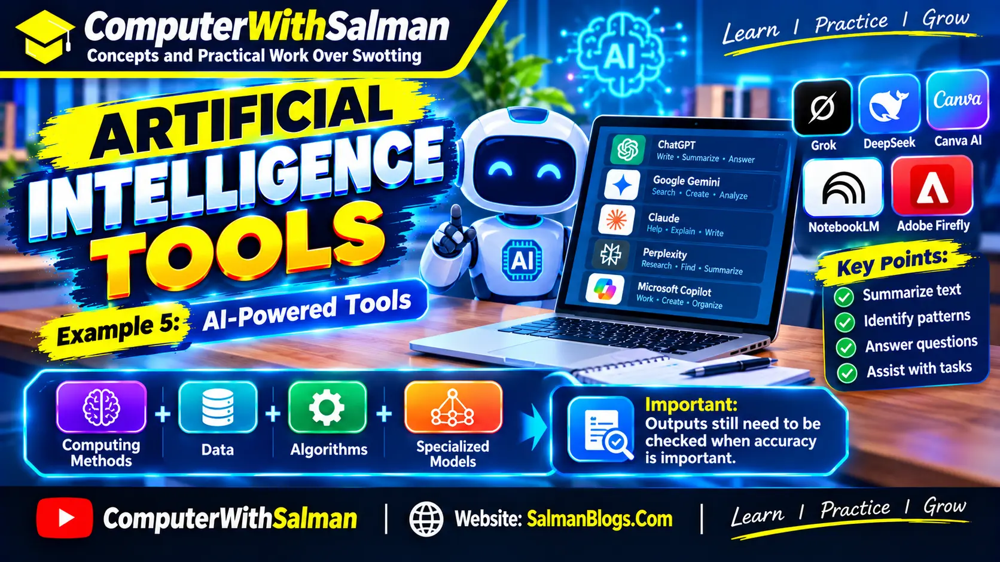

Introduction
Computers have become part of almost everything we do, from communicating with friends and attending online classes to managing businesses and exploring space. But have you ever wondered how computers process information, how applications work, or how a machine can follow instructions to solve a problem? These questions lead us to an important field of study: computer science.
Computer science is the study of computation, algorithms, data, programming, and the principles behind computer systems. It helps us understand not only how to write software but also how to design solutions, organize information, and make computers perform useful tasks. It combines logical thinking, problem-solving, mathematics, and creativity.
Many people think computer science is simply about learning programming languages or using computers. In reality, it covers a much wider range of subjects. Programming is one part of the field, while other areas include artificial intelligence, databases, computer networks, cybersecurity, operating systems, and the theory of computation.
Consider a simple example: when you search for a video, send a message, or purchase something online, several computer systems work together behind the scenes. They process your request, find the relevant information, communicate across networks, and return a result. Computer science provides many of the concepts and techniques used to build these systems.
Learning computer science can be useful for students, teachers, aspiring programmers, and anyone interested in understanding modern digital technology. You do not need to be an expert in mathematics or programming to begin. Starting with basic concepts and working through practical examples can help you gradually build a strong foundation.
In this guide, you will learn what computer science means, how it works, which subjects it includes, how it differs from information technology, and where its principles are used in everyday life. You will also discover the skills beginners can develop and the career paths they may explore as they gain knowledge and experience.
What Is Computer Science?
Computer science is the study of how information can be represented, processed, stored, and communicated using computational systems. It involves developing algorithms, designing software, understanding computer hardware, and finding efficient ways to solve problems.
An important part of computer science is learning how to break a complicated problem into smaller steps. Once a problem is understood, a solution can be described using an algorithm and implemented in a programming language when necessary.
For example, imagine building a program that calculates students' examination results. The program needs to accept marks, add the values, calculate an average, and display the result. Computer science concepts help the developer organize these steps, handle incorrect input, and produce an accurate answer.
Computer science also examines questions that go beyond writing programs. Researchers study how to make algorithms faster, how to protect information, how computers learn from data, and which problems can or cannot be solved efficiently by a computer.
Computer Science in Simple Words
In simple terms, computer science teaches us how to solve problems with computation. It explains the ideas and methods used to create the software, systems, and digital services that people rely on every day.
What Does a Computer Scientist Do?

The work depends on the person's specialization. Some computer scientists develop algorithms, while others design software, study artificial intelligence, improve database systems, or research ways to make computing more secure and efficient.
- Problem-solving: Understanding a problem and developing a logical solution.
- Programming: Writing instructions that a computer can execute.
- Algorithm design: Creating step-by-step methods for completing tasks.
- Data management: Organizing and processing information effectively.
- System design: Planning how software and computing components work together.
- Research: Exploring new computing methods and improving existing technologies.
Key Point to Remember
Computer science is not just about operating a computer or memorizing code. It is about understanding computational problems and developing reliable, logical, and efficient solutions.
How Does Computer Science Work?

Computer science applies logical methods to problems involving information and computation. The exact process varies from one task to another, but many projects follow a similar pattern: understand the problem, plan a solution, implement it, test the result, and improve it when necessary.
1. Identify the Problem
First, determine what needs to be solved. For example, a school may need a system that calculates examination results and prepares a list of students according to their marks.
2. Design a Solution
Next, decide which information is needed and what steps will produce the correct result. A flowchart, pseudocode, or written plan can help organize the solution before any code is written.
3. Implement the Solution
If a program is required, the planned steps can be translated into a programming language such as Python, Java, or C++. The choice depends on the project's requirements and the tools available.
4. Test the Result
Testing helps reveal mistakes and unexpected behavior. A marks calculator, for example, should be checked with different scores, missing values, and incorrect input to make sure it behaves as expected.
5. Improve the Solution
After testing, the solution may need improvements to its accuracy, speed, security, or ease of use. This step is especially important when a system must handle large amounts of information or many users.
These steps provide a useful starting point for understanding computational problem-solving. Real-world projects may revisit earlier steps as new requirements or problems arise.
Major Branches of Computer Science
Computer science contains several connected areas of study. Each branch addresses a different set of problems, although many practical projects use concepts from more than one area.
1. Programming and Software Development
This area focuses on creating computer programs and software applications. It includes programming languages, software design, testing, debugging, and maintaining applications after they are released.
Examples include developing websites, mobile applications, business software, educational tools, and desktop programs.
2. Data Structures and Algorithms
Data structures describe how information is organized in a computer, while algorithms provide steps for processing that information. Choosing an appropriate structure or algorithm can make a program easier to maintain and more efficient.
Arrays, linked lists, stacks, queues, trees, and graphs are common data structures. Searching and sorting are examples of tasks that algorithms can perform.
3. Artificial Intelligence and Machine Learning
Artificial intelligence explores methods for building systems that perform tasks associated with abilities such as language understanding, prediction, planning, and recognizing patterns. Machine learning is a part of AI in which systems learn patterns from data.
Examples include speech recognition, image classification, recommendation systems, and tools that help analyze large datasets.
4. Database Management
Databases provide structured ways to store, retrieve, and manage information. Database systems are used by schools, hospitals, online stores, banks, and many other organizations.
For example, an online store may use a database to manage product details, customer accounts, orders, and stock levels.
5. Computer Networks
Computer networking studies how computers and other devices communicate and share resources. It includes communication protocols, network design, addressing, routing, and the technologies that allow devices to exchange data.
The internet is a familiar example of a large network that connects computers and services across the world.
6. Operating Systems
An operating system manages important computer resources and provides an environment in which applications can run. It helps coordinate processes, memory, files, devices, and other system operations.
Windows, Linux, macOS, Android, and iOS are examples of operating systems used on different types of devices.
7. Cybersecurity
Cybersecurity focuses on protecting computers, networks, applications, and information against unauthorized access, attacks, and other threats. Its techniques include access control, encryption, secure software design, monitoring, and vulnerability testing.
8. Computer Architecture
Computer architecture examines how a computer's components are organized and how they work together to execute instructions. Topics include processors, memory, instruction sets, and the relationship between hardware and software.
9. Human-Computer Interaction
Human-computer interaction studies how people interact with digital systems. It helps designers create interfaces that are understandable, accessible, efficient, and comfortable to use.
10. Theory of Computation
This branch explores the mathematical foundations of computing. It examines formal languages, automata, computability, and the limits of algorithms. These concepts help explain which problems computers can solve and how computational problems can be classified.
Real-Life Examples of Computer Science
Computer science concepts are often easier to understand when connected to familiar activities. Many digital services depend on algorithms, data processing, software, and communication between computer systems.
Example 1: Online Shopping

When you search for a product on an online store, software processes your search, retrieves matching products from a database, and displays the results. Other components may calculate prices, check available stock, and process your order.
Example 2: Navigation Applications

A navigation application uses digital maps, location information, and algorithms to help identify routes. Depending on the service, it may also use traffic information to estimate journey times and suggest alternative routes.
Example 3: School Result Systems

A result management system can store students' marks, calculate totals, determine grades according to defined rules, and prepare reports. Proper validation helps prevent incorrect values from producing misleading results.
Example 4: Email and Messaging

Email and messaging services use software and network protocols to send information between devices. They may also use databases, encryption, spam detection, and authentication to help deliver and protect messages.
Example 5: Artificial Intelligence Tools

AI-powered tools can summarize text, identify patterns, answer questions, and assist with certain tasks. These systems rely on computing methods, data, algorithms, and specialized models. Their outputs still need to be checked when accuracy is important.
Computer Science vs Information Technology
Computer science and information technology are closely related, but they do not have exactly the same focus. Computer science often emphasizes computation, algorithms, programming, and the design of software and systems. Information technology generally focuses more on selecting, deploying, maintaining, and supporting technology to meet practical organizational needs.
The distinction is not absolute. Both fields can involve programming, databases, networking, cybersecurity, and system administration. Their curricula and job responsibilities often overlap.
| Aspect | Computer Science | Information Technology |
|---|---|---|
| Main focus | Computation, algorithms, software, and computing theory | Using and managing technology to meet practical needs |
| Common subjects | Programming, data structures, algorithms, theory of computation | Networking, system administration, IT support, infrastructure |
| Example task | Designing an algorithm for a software application | Deploying and maintaining an organization's computer systems |
| Possible careers | Software developer, algorithm engineer, research scientist | IT support specialist, systems administrator, network administrator |
Neither field is automatically better than the other. The right choice depends on your interests, the subjects you enjoy, and the type of work you want to do.
Skills Needed to Learn Computer Science
You can begin learning computer science without knowing every programming language or advanced mathematical concept. A willingness to practise, ask questions, and work through problems is a useful starting point.
- Logical thinking: Breaking problems into clear, manageable steps.
- Problem-solving: Comparing possible solutions and identifying errors.
- Programming fundamentals: Understanding variables, conditions, loops, functions, and data types.
- Mathematical reasoning: Developing an understanding of patterns, logic, and relevant mathematical concepts.
- Attention to detail: Checking instructions, results, and possible edge cases.
- Communication: Explaining ideas and working effectively with other people.
- Continuous learning: Keeping your knowledge current as tools and computing practices change.
These skills develop over time. Beginners can strengthen them by solving small exercises, creating simple projects, reading code, and learning why a particular solution works instead of only memorizing the final answer.
Career Opportunities in Computer Science
Computer science knowledge can support several career paths, but the qualifications and practical skills required vary by role. Some positions focus on building software, while others involve data, infrastructure, security, research, or intelligent systems.
- Software Developer: Designs, builds, tests, and maintains software applications.
- Web Developer: Creates websites and web applications.
- Data Analyst: Examines data to identify patterns and communicate useful findings.
- Data Scientist: Uses statistical methods, programming, and data analysis to investigate complex questions.
- Machine Learning Engineer: Develops and deploys systems that use machine learning models.
- Cybersecurity Analyst: Helps identify risks, investigate security issues, and protect systems.
- Database Administrator: Helps maintain database availability, performance, integrity, and security.
- Network Engineer: Designs, configures, and troubleshoots computer networks.
- Systems Engineer: Works with interconnected computing components and infrastructure.
- Computer Science Researcher: Investigates computing problems and develops or evaluates new methods.
A degree can be important or required for some positions, particularly specialized and research-focused roles. Other opportunities may place considerable emphasis on demonstrable skills, relevant experience, certifications, and a portfolio of completed projects. Requirements depend on the employer and the position.
How to Start Learning Computer Science
If you are new to the subject, you do not need to study every branch at once. A step-by-step approach makes it easier to understand the foundations before moving on to more advanced topics.
Step 1: Learn Basic Computer Concepts
Begin with computer hardware, software, memory, storage, operating systems, and the way computers represent information. These concepts help explain what happens when a program runs.
Step 2: Choose One Programming Language
Python is a reasonable starting point because its syntax is generally straightforward for beginners. You could also start with another language if your school course, project, or learning goals require it.
Step 3: Practise Problem-Solving
Write small programs that solve practical problems, such as calculating an average, converting temperatures, or checking whether a number is even. These exercises introduce programming logic without requiring large projects.
Step 4: Study Algorithms and Data Structures
Once you understand basic programming, explore how information is organized and how algorithms process it. Start with simple examples before moving to trees, graphs, and more complex algorithms.
Step 5: Build Small Projects
Apply what you learn by building a calculator, a quiz application, a simple website, or a student marks program. Projects give you opportunities to practise debugging, organizing code, and explaining your decisions.
Step 6: Explore Different Branches
After learning the basics, try introductory projects in areas such as databases, networking, web development, data analysis, or artificial intelligence. Exploring these subjects can help you decide which direction interests you most.
Frequently Asked Questions About Computer Science
Is computer science difficult to learn?
Computer science can be challenging because it involves logical reasoning, problem-solving, and sometimes mathematics. However, beginners can make steady progress by studying one concept at a time and practising regularly. The difficulty depends on the topic and the learner's background.
Is computer science only about programming?
No. Programming is an important part of computer science, but the field also includes algorithms, computer architecture, databases, networking, cybersecurity, artificial intelligence, and theoretical computing.
Can I learn computer science without a powerful computer?
Yes. Many foundational topics and beginner programming exercises can be studied on an ordinary computer. Some online learning tools also work through a web browser. More demanding tasks, such as training large machine learning models, may require additional computing resources.
Which programming language should a beginner learn first?
Python is a common choice because it has readable syntax and supports many types of projects. However, the best starting language depends on your learning goals, educational requirements, and the kind of software you want to build.
What is the difference between computer science and computer engineering?
Computer science commonly focuses on computation, algorithms, software, and the principles of computing. Computer engineering generally places greater emphasis on designing and integrating hardware and software, including processors, digital systems, and embedded devices. The two fields overlap in several areas.
Does computer science require mathematics?
Some areas rely heavily on mathematics, including algorithms, graphics, machine learning, and theoretical computer science. Other introductory topics can be learned with basic mathematical knowledge. The amount of mathematics required depends on the subject and career path.
What jobs can I pursue after studying computer science?
Possible paths include software development, web development, data analysis, cybersecurity, database administration, networking, and research. The qualifications needed vary, and completing a course alone does not guarantee employment.
Conclusion
Computer science helps explain how computers process information and how computational methods can solve problems. It brings together programming, algorithms, data, software, hardware, and many other connected subjects. These foundations support technologies used in education, communication, healthcare, business, research, and everyday life.
If you are just beginning, focus on understanding the basic concepts rather than trying to learn everything at once. Start with computer fundamentals, practise programming, and gradually explore the branches that interest you. Small projects and regular practice can help turn theoretical knowledge into useful skills.
Computer science is a broad field, so there is no single path that suits everyone. The best approach is to stay curious, keep practising, and choose topics that connect with your interests and long-term goals.
Frequently Asked Questions (FAQs)
Python is the best choice for beginners because it has simple syntax, is easy to learn, and is widely used in AI, web development, automation, and data science.
Python is popular because it's easy to read, has thousands of free libraries, and can be used for AI, machine learning, automation, web development, and data analysis.
Yes. JavaScript remains the backbone of modern web development and is essential for building interactive websites, web apps, and full-stack applications.
TypeScript is an improved version of JavaScript that adds type checking, helping developers write cleaner, safer, and more maintainable code.
Yes. Java is widely used for enterprise software, banking systems, cloud applications, backend development, and Android apps.
Go is mainly used for cloud computing, backend APIs, DevOps, microservices, and high-performance server applications.
Rust offers excellent performance and memory safety, making it ideal for system programming, cybersecurity, cloud infrastructure, and blockchain projects.
C# is used for Windows applications, enterprise software, cloud services, web development with .NET, and game development using Unity.
Kotlin is Google's preferred language for Android development and is also used for backend services and cross-platform mobile applications.
Swift is Apple's official programming language for building apps for iPhone, iPad, Mac, Apple Watch, Apple TV, and Vision Pro.
SQL is used to manage databases, retrieve information, generate reports, and support applications that store and process data.
With consistent practice and real-world projects, many learners become job-ready within 6 to 12 months.
No. Many successful developers are self-taught. Strong programming skills, practical projects, and a good portfolio are often more important than a degree.
Practice every day, build real projects, read official documentation, explore open-source code, and use AI tools to understand concepts, not just copy code.
Choose based on your goals: Python for AI and automation, JavaScript or TypeScript for web development, Kotlin for Android, Swift for iOS, Java for enterprise software, Go for cloud computing, Rust for systems programming, C# for .NET and Unity, and SQL for working with databases.
Related Posts
- How AI is Changing Our World
- Top 10 AI Tools You Must be Using in 2026
- The The-Future-of-Smartphones
Final Thoughts
Programming languages will continue to evolve, but the fundamentals of software development remain the same. The best language isn't necessarily the most popular one. It's the one that helps you achieve your goals and build the type of applications you're passionate about.
If you're just getting started, begin with one language and focus on mastering the basics before jumping to another. Learn how to solve problems, write clean code, work with databases, use version control, and build real projects. These practical skills are far more valuable than knowing the syntax of multiple languages.
In 2026, AI coding assistants have made development faster than ever, but they haven't replaced the need for skilled programmers. Companies still need developers who understand software architecture, debugging, security, performance, and how to turn ideas into reliable applications.
Whether you choose Python for AI, JavaScript and TypeScript for web development, Java or Go for backend systems, Kotlin or Swift for mobile apps, Rust for high-performance software, C# for enterprise applications and game development, or SQL for working with databases, the key to success is consistent practice.
Keep learning, build projects that solve real problems, and stay curious about new technologies. The programming language you choose is only the starting point. Your creativity, persistence, and willingness to keep improving are what will shape your future as a developer.